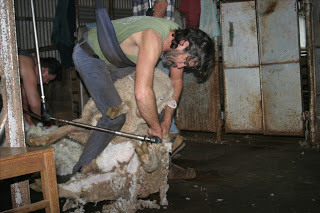

During the most recent Federal Reserve-engineered economic bubble, state and local governments made extravagant promises to their tax-feeder constituencies regarding pensions and other benefits. Now that the bubble has burst, sales and property taxes -- once a mighty, roaring river of revenue -- have been reduced to a thin, pathetic trickle.
This comes at a time when, as the New York Times reports, there is "a $1 trillion gap between what all 50 states have promised their workers [sic -- a more accurate description is "employees"] and what they have set aside."
As the economic crisis deepens, how will state and municipal governments continue to provide for their most cherished constituency -- those who live by plundering the productive?
Wendy McElroy highlights one approach being pioneered by the town of Tracey, California: The city will now impose a surcharge on emergency services that have already been paid for through taxes. Residents of that city will be charged $300 for the fire department to respond to a medical emergency; non-residents will be billed $400 for the same service. There is the option of paying an annual $48 fee for "premium" 911 service.
Note carefully that this is not privatization. Taxes will still be extracted, but tax victims will now have the privilege of paying twice for the same services. If you're a Tracey resident and see someone having a heart attack, McElroy wryly comments, "you should quickly set a trash bin on fire. Otherwise, by calling for help, your monthly budget may not stretch to include mortgage or food." Tracey's political class simpers that the city government is running a $9 million budget deficit. Interestingly, that is exactly the amount spent each year on employee pensions.
Rather than renegotiating those benefits, the city government is putting the screws to economically burdened tax victims, and doing so in a way that is going to cost the lives of some of them. "Forget that phone bills already include a charge to cover 911," continues McElroy. "Forget that property taxes already assist with those costs. The politicos don't care. They want your money. And they will let people die -- many of them elderly poor -- rather than deliver services for which they have already been paid."
In other jurisdictions, the wealth-devouring class is resorting to other potentially lethal revenue enhancement strategies. Before examining the specifics, two principles should be kept in mind.
First, government -- unlike private entities that offer goods or services in exchange for revenue -- engages in pure consumption. As a result, all sources of government revenue involve destruction of wealth, rather than mutually beneficial commerce that enhances both parties.
Second, everything government does to obtain revenue contains an implicit death threat. Anyone who resists or refuses the demand for revenue with sufficient tenacity will find himself on the receiving end of an explicit threat made by an armed stranger in a government-issued costume.
A gathering of statist shearers: Maryland State Police and personnel from the St. Mary's County assemble before carrying out "Operation Most Wanted Weekend," a 2008 exercise in "taxation by citation."
Those principles provide the proper context to examine the tactics employed by various municipal and state governments to conduct what former Sheriff Richard Mack perceptively describes as "taxation through citation."
To put the matter bluntly, police -- the self-described "Sheepdogs" -- aren't here to protect the flock, but rather to make sure that we're securely penned in when it's sheep-shearing season.
During the penultimate weekend of February, police in Minneapolis-St. Paul Minnesota conducted an elaborate and lucrative sting to enforce the state's primary seat belt law.
Officers disguised as homeless people were dispatched to harass drivers at a busy intersection: The "homeless" people -- most likely in violation of traffic ordinances, certainly in violation of the 4th Amendment and Minnesota's state equivalent -- would peer into cars and then radio ahead to their cohorts in officially sanctioned crime, who would hand each "offender" an extortion note (more commonly called a "traffic ticket").
Dave Kvam, the deputy police chief of Maplewood (a suburb of St. Paul), insists that the multi-departmental racket was a justifiable exercise. After all, he told local reporter Ruben Rosario, "police have received numerous complaints of panhandling, and he believes the seat-belt law is a good one and should be enforced" -- by, among other things, having police violate ordinances against panhandling. That parallel is a bit unfair: Although panhandlers may be obnoxious, even the most tenacious of them couldn't get away with demanding money at gunpoint, as Kvam's fellow street criminals did during the seat-belt ambush.
Each victim would typically be mulcted $25 for declining to wear seat belts, coupled with a $75 "petty misdemeanor surcharge fee" -- which is essentially a tax inflicted on people for refusing to obey a spurious enactment the tax-absorbing class calls a "law" -- plus an additional $8 kickback to the state crime bosses in St. Paul (who had already been given a $3.5 million federal bribe to enact the primary seat-belt "law" in the first place). At least 122 citations were handed out in a space of three and a half hours.
As Rosario points out, the homeless ruse has been used not only in Minnesota but also "in Houston and a few other jurisdictions." (As we will discuss anon, Houston is also the scene of another creative effort to harvest revenue from the plebes.) As the economy sickens and street people become a more visible presence, it's quite likely their numbers will frequently include predatory, revenue-hungry police.
The tax-extracting class afflicting Texas will celebrate the beginning of March with the fourth annual "Warrant Roundup," a yearly event in which police fan out to shakedown or imprison anyone with unpaid citations of any kind. This includes not only traffic tickets, but also fines for violating any of the myriad morally unsupportable but lucrative provisions in state and municipal building, planning, zoning, and safety codes.
*** ***
The armed revenue farmers presented in this film clip were on their best behavior, of course. They weren't shown banging on the door of some underpaid, overburdened private citizen at or before daybreak, demanding money and dragging away in handcuffs those who couldn't pay. They weren't shown barging into classrooms or workplaces to present the same demands and inflict public humiliation on those not capable of complying with them.
All of this does occur during warrant roundups, however -- a fact prominently mentioned in official pronouncements, if played down, for propaganda purposes, by government-aligned stenographers in the local media.
At the risk of culpable redundancy, I make the point once again: All of this is done for the purpose of collecting revenue on behalf of the political class, not to serve or protect the productive public. This is made quite clear by the opening lines of a Houston Chronicle account of a "warrant roundup" conducted last August: "Nearly 2 million warrants worth more than $340 million are outstanding in the Houston area, and in most cases they're not for hard-core criminals. They're for average citizens who haven't settled minor traffic and ordinance citations."
Revenue farmer in the rear-view: No good can come from this.
Of the eight people listed as "Houston's Most Wanted" during the round-up -- people who had at least 100 outstanding warrants -- four were cited for the apparently grievous offense of “failure to securely attach a tax permit to a coin-operated machine.” Other grievous offenses committed by that band of shameless rogues include failure “to conspicuously post at every entrance a sign stating smoking is prohibited,” and “having no hand-washing sign in a bathroom used by employees.”
How can Houstonians sleep peacefully in their beds knowing that such marauders are on the loose? As Barney Fife might exclaim: "It's a regular reign of terror!"
According to the Chronicle, in 2008 the Houston Police Department -- in tacit recognition of the fact that its primary function is to plunder the populace rather than to protect it -- “purchased automated license plate readers that read up to 60 vehicle license plates per minute." This allows the police to identify those with outstanding warrants, including the growing number of people who “have to choose between paying their grocery bill or their tickets.”
What a shameful lack of civic consciousness! How dare such people put food on their tables when there are tax-feeders pining for revenue? And coughing up the money is so much more convenient now that police “have the ability to run credit card payments so people can settle their outstanding warrants on the spot.”
For those who cannot pay off the parasite class and its armed enforcers, debtors’ prison awaits: As the Texas Court of Appeals recently observed, Class C misdemeanors “are still crimes, and … the person charged can be arrested on warrant like any ordinary criminal, forced to travel a long distance to attend the court, [and be] remanded in custody and imprisoned in default of payment of the fine.”
The only things that government makes -- as I've said before -- is criminals out of innocent people, and corpses out of living human beings. A Government's lethality increases the more energetically it criminalizes innocuous behavior.
In light of that relationship, it's reasonable to suspect that the ruling class in the Lone Star State appears determined to precipitate a bloodbath: The Texas Public Policy Foundation points out that 779 Texas statutes identify “misdemeanors,” but “only 64 of those instances are in the Penal Code or Code of Criminal Procedure.”
In the once-free Lone Star State, concludes the Texas Public Policy Foundation, "the criminal law is not just for criminals anymore. The same is true of imprisonment: Half of all Texans behind bars were incarcerated for nonviolent offenses.
This trend is not confined to Texas. The state and municipal governments that disfigure our country like pustules on the face of a smallpox victim are relentless in devising new measures intended to justify the extraction of wealth at gunpoint. This aggression will only increase as the depression deepens.
At some point, those presuming to rule us won't be satisfied merely to fleece their increasingly bedraggled flock. That's when the options for the sheep will be clarified into a stark and unmistakable choice between revolt and slaughter.

Dum spiro, pugno!